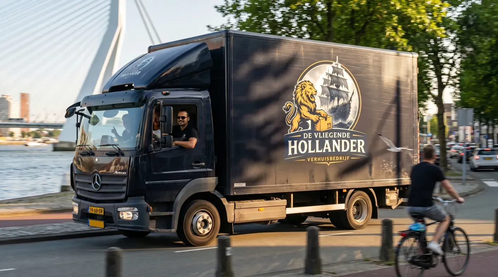
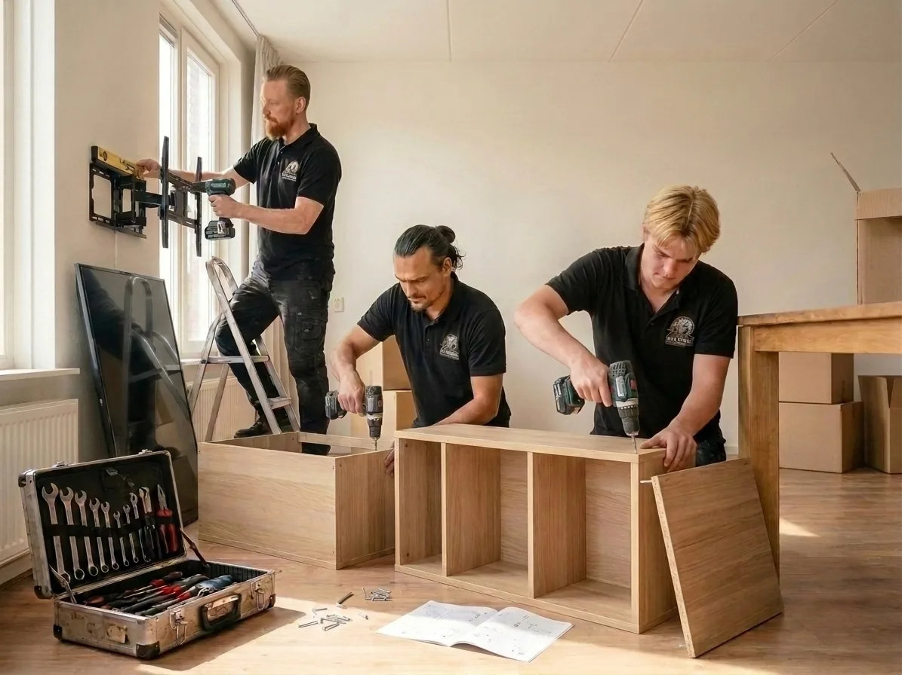

Jij pakt in.
Wij verhuizen.
Je dozen staan klaar. Je zoekt hulp met tillen, vervoer en je spullen op de nieuwe plek.
- Je pakt zelf je spullen in
- Verhuiswerk en vervoer bespreken
- Handig als je zelf wilt voorbereiden

VERHUISBEDRIJF · ROTTERDAM & HEEL NEDERLAND
De grote meubels, de laatste doos, je favoriete stoel. Kies de verhuishulp die bij jou past. Wij denken met je mee.
Begin met de route. De rest volgt vanzelf.
JOUW SPULLEN. JOUW KEUZE.
Iedere verhuizing is anders. Kies wat nu bij je past; je kunt het later altijd aanpassen. De werkzaamheden stem je af in de offerte.
Je dozen staan klaar. Je zoekt hulp met tillen, vervoer en je spullen op de nieuwe plek.
Je wilt meer tijd overhouden voor alles rond je nieuwe huis. Neem inpakwerk mee in je plan.
Een verhuizing voor een ouder, een ingewikkelde trap of nog veel open vragen? Begin bij jouw situatie.

Van loshalen tot weer op z’n plek.HET ZIT ’M IN DE VOORBEREIDING
Die smalle trap. Het bed dat uit elkaar moet. De tafel die absoluut mee moet. Hoe beter de voorbereiding, hoe duidelijker je verhuisplan.
Neem montage mee in mijn plan ↗GRIP OP JE VERHUISKOSTEN
Een losse vanafprijs vertelt niet het hele verhaal. Je inboedel, de route, de toegang en het werk bepalen samen de prijs. Dit wil je vooraf helder hebben.
Je inboedel, het aantal kamers en bijzondere spullen. Een piano of grote kast vraagt een andere aanpak dan dozen.
De afstand, verdiepingen, liften en ruimte voor de verhuiswagen. Denk ook aan een smalle trap of een lange looproute.
Zelf inpakken of hulp erbij? Meubels uit elkaar halen, weer monteren of tussentijds opslaan: zet het vooraf op een rij.
Je gewenste dag, de planning en eventuele flexibiliteit. Of jouw datum mogelijk is, moet persoonlijk worden bevestigd.
VASTE PRIJS OF UURTARIEF?
Bij een vaste prijs vergelijk je de afgesproken werkzaamheden en uitzonderingen. Bij een uurtarief heb je ook een inschatting van uren, mensen, vervoer en materialen nodig.
Controleer btw, eventuele toeslagen en afspraken over meerwerk.
VERTROUWEN BEGINT BIJ DUIDELIJKHEID
Je hoeft geen verhuisexpert te zijn. Met deze afspraken weet je waar je aan toe bent voordat je een opdracht bevestigt.
Leg vast wat je zelf voorbereidt en wat de verhuizers verzorgen. Bespreek ook bescherming van meubels, vloeren en kwetsbare spullen.
Een voorkeursdatum in een aanvraag is nog geen reservering. Laat planning, aankomst en de gevolgen van wijzigen vooraf bevestigen.
Vraag naar de dekking, het eigen risico, uitsluitingen en hoe je schade meldt. Zo weet je welke afspraken voor jouw verhuizing gelden.
Bekijk de huidige voorwaarden ↗Lees de beoordelingen bij de bron en let op ervaringen met planning, zorgvuldigheid en contact.
EEN KLEINE CHECK VOORAF
Deze omstandigheden zijn handig om alvast te bespreken. Kies een situatie en neem de aandachtspunten mee in je plan.
Een lift, trappenhuis en de afstand tot de verhuiswagen beïnvloeden de aanpak.
JOUW VERHUIZING, OP EEN RIJ
Van je eerste ideeën naar een overzichtelijke voorbereiding. Alleen je vertrek- en aankomstplaats zijn nodig om te beginnen.
Dit is een oefenformulier. Je gegevens blijven in dit tabblad en worden niet verstuurd of opgeslagen. Gebruik gerust fictieve gegevens. Er wordt geen prijs berekend of datum gereserveerd.
Dit is een voorbeeld. Er is niets verstuurd. Je kunt je plan hieronder controleren, aanpassen en bewaren.
Bewaar je plan voor een gesprek. Prijs en beschikbaarheid zijn nog niet bevestigd.
ALVAST GOED OM TE WETEN
Staat jouw vraag er niet bij?
Bel voor persoonlijk overleg ↗
Ja. Laat het datumveld leeg en vermeld eventueel de periode die je in gedachten hebt. Een definitieve datum en beschikbaarheid stem je daarna af.
Voor deze eerste voorbereiding niet. Je kunt beginnen met je type woning en bijzonderheden. Voor een betrouwbare prijs moet de verhuizer de omvang en omstandigheden wel zorgvuldig beoordelen.
Je kunt aangeven welke werkzaamheden je zelf wilt doen. Bespreek vooraf geschikt verpakkingsmateriaal, bescherming en wat zelf inpakken betekent voor de afspraken bij eventuele schade.
Zonder bevestigde bedrijfstarieven en een duidelijke omschrijving van het inbegrepen werk zou een bedrag een verkeerd beeld geven. In dit voorbeeld zie je daarom eerst wat de prijs bepaalt. De werkelijke prijs volgt uit een offerte voor jouw situatie.
Ga daar niet zonder meer van uit. Controleer vóór akkoord welke dekking en voorwaarden voor jouw verhuizing gelden, inclusief eigen risico en uitzonderingen. Dit voorbeeld doet geen verzekeringsbelofte. Lees de huidige bedrijfsvoorwaarden ↗
Maak een lijst van wat meegaat. Noteer verdiepingen, afmetingen van grote meubels, beschikbare liften en parkeerruimte. Bespreek wie inpakt en demonteert, en welke toestemming of parkeervoorziening nodig is.
Het formulier stuurt niets naar het bedrijf of een andere partij. Invoer staat alleen tijdelijk in je tabblad. Alleen als je zelf “Bewaar samenvatting” kiest, wordt een tekstbestand op je apparaat gedownload. Er zijn geen trackers of externe lettertypen. Externe links openen wel een andere website.
EEN VERHUIZING BEGINT MET EEN GESPREK